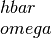
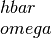

scattering module¶
This module, scattering.py contains the setup and
calculation of the scattering properties.
Contains routines to set up the scattering of the charge carriers.
-
scattering.check_scattering(tr)¶ Checks the scattering arrays.
Also that they are dimensionalized to the energy values stored in the current Bandstructure() object.
- Parameters
- trobject
A Transport() object.
- Returns
- None
-
scattering.combined_scattering(tr, energy, tau0, energy_trans)¶ Calculates the total relaxation time.
- Parameters
- trobject
A Transport() object
- energyfloat
The energy of the charge carrier in eV.
- tau0ndarray
- Dimension: (12)
Contains the relaxation time prefactors for the different scattering mechanisms in units of fs.
- energy_transndarray
- Dimension: (12)
Contains the energy transitions in eV (that is added to the energy in
 , typically,
, where 
is the size of the energy transition. Set it to zero for
the non-relevant scattering mechanisms.
, typically,
, where 
is the size of the energy transition. Set it to zero for
the non-relevant scattering mechanisms. - effmassfloat
The effective mass in units of the electron mass
- Returns
- float
The combined relaxation time in fs.
Notes
Calculates the total relaxation time
where
.
The array scattering_tau0_select determines which
scattering to include in the sum. Consult scattering_parabolic()for additional details. The scattering prefactors are ordered in a sequence described there. The scattering_tau0_select follows this sequence and is set in the bandstructure configuration file.
-
scattering.find_r_for_closed(tr, band)¶ Analyze the input tau0 and find the associated scattering values r.
- Parameters
- trobject
A Transport() object
- bandinteger
The band index.
- Returns
- integer
Two times the r value to avoid half integer values.
Notes
These are necessary for the analytic Fermi integrals.
-
scattering.interpolate(tr, method='linear')¶ Interpolates the scattering array on all available energies.
- Parameters
- trobject
A Transport() object containing the scattering arrays and the energies etc.
- methodstring, optional
The interpolation method to use. Uses the
interp1d()function of Scipy and this sets the parameter kind. Defaults to “linear”.
- Returns
- None
See also
Notes
Here we only perform an interpolation on the array containing the total relaxation time since this is used during the transport calculations.
-
scattering.pad_scattering_values(tr)¶ Pad the scattering values.
- Parameters
- trobject
A Transport() object.
- Returns
- None
Notes
The padded values are stored in the tr object.
We need to pad the energies where the dos is calculated with a larger number of samples such that we cover the whole energy range in the stored bandstructure due to later interpolation routines etc. not going out of bounds when such energies are passed to the interpolator etc.
We can set it to a large number because 1 eV outside the chemical potential. We already know no states contribute at temperatures below 2000 K.
-
scattering.scattering_dos(tr, dos, energies, select_scattering)¶ Setup scattering mechnisms.
Store values in the scattering arrays using the density of states data as the energy dependency.
- Parameters
- trobject
A Transport() object
- dosndarray
- Dimension: (N,M)
Array containing the partial density of states (1/eV/AA^3), where N is the band index and M is the energy index.
- energiesndarray
- Dimension: (M)
Array containing the energy in eV at M samplings where the density of states is calculated.
- select_scatteringndarray
- Dimension: (12)
Array containing integers. Set to 1 to select the scattering, 0 to exclude. The variables in select_scattering are set in the bandstructure configuration file, one value for each scattering and band. See notes below for the currrently available scattering mechnisms.
- Returns
- scattering_invndarray
- Dimension: (T,N,M,12)
The scattering array in fs units in the current Transport() object for T temperature steps, N number of bands, M number of energy steps and 12 number of scattering mechanisms
- scattering_total_invndarray
- Dimension: (T, N, M)
The total (all mechanisms summed) scattering array in fs units) in the current Transport() object for T temperature steps, N number of bands and M number of energy steps
- scattering_tau0ndarray
- Dimension: (T, N, 12)
The scattering prefactor array, tau0 in units of fs, in the current Transport() object for T temperature steps, N number of bands and 12 number of scattering mechanisms.
Notes
Currently only the following scattering mechanisms are supported:
select_scattering index
scattering mechanism
1
Acoustic phonon scattering from def. pot.
2
Non-polar optical phonon scattering from def. pot. (alpha stage)
3
Intervalley phonon scattering (alpha stage)
4
Polar optical phonon scattering (alpha stage)
5
None
6
None
7
None
8
None
9
None
10
None
11
None
12
Constant (energy and k-point independent)
Only the acoustic phonon scattering has been tested.
Consult the bandstructure configuration file for the respective constants that have to be set besides select_scattering and their units.
Todo
Add more extensive documentation for the different scattering mechanisms.
Warning
The scattering models based on density of states does currently not properly involve the energy shift required for the transfer energies. This is quite serious, but does not influene the acoustic phonon scattering (taken to be zero in the model implemented here). The current approach if not using the analytic parabolic models is that the transfer energies for all scattering mechanisms are summed and the energy of where the relaxation time is evaluated is shifted by this amount during interpolation. The sum approximation is not physically justified and needs additional investigation, also the interpolation are sensitive and can fail close to the van Hove singularities since the relaxation time is propotional to the inverse of the density of states. All known problems pertaining to density of states are also manifested here for the scattering.
-
scattering.scattering_parabolic(tr, energies, select_scattering, use_eonk=False)¶ Setup scattering mechnisms.
Store values in the scattering arrays using parabolic band dispersions as an approximation.
- Parameters
- trobject
A Transport() object
- energiesndarray
- Dimension: (N)
Array containing the energy in eV at N samplings where the scattering values are o be calculated.
- select_scatteringndarray
- Dimension: (12)
Array containing integers. Set to 1 to select the scattering, 0 to exclude. The variables in select_scattering are set in the bandstructure configuration file, one value for each scattering and band. See notes below for the currrently available scattering mechnisms.
- use_eonkboolean
If set to True, generate the scattering values on the supplied energy for each band and on its k-points
- Returns
- scattering_invndarray
- Dimension: (T,N,M,12)
The scattering array in fs units in the current Transport() object for T temperature steps, N number of bands, M number of energy steps and 12 number of scattering mechanisms
- scattering_total_invndarray
- Dimension: (T, N, M)
The total (all mechanisms summed) scattering array in fs units) in the current Transport() object for T temperature steps, N number of bands and M number of energy steps
- scattering_tau0ndarray
- Dimension: (T, N, 12)
The scattering prefactor array, tau0 in units of fs, in the current Transport() object for T temperature steps, N number of bands and 12 number of scattering mechanisms.
Notes
Currently only the following scattering mechanisms are supported:
select_scattering index
scattering mechanism
1
Acoustic phonon scattering from def. pot.
2
Non-polar optical phonon scattering from def. pot.
3
Intervalley phonon scattering
4
Polar optical phonon scattering
5
Piezoelectric acoustic phonon scattering
6
Ionized impurity scattering, Brooks-Herring
7
Ionized impurity scattering, Conwell-Weisskopf
8
Alloy scattering
9
None
10
None
11
None
12
Constant (energy and k-point independent)
Also consult the bandstructure configuration file for the respective constants that have to be set besides select_scattering and their units.
Todo
Add more extensive documentation for the different scattering mechanisms.